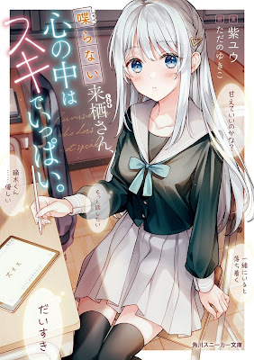

Shaberanai Kurusu-san Kokoro no Naka wa Suki de Ippai
Novel Info's
Status: Completed
Genre: Comedy, Drama, Romance, Supernatural
Author: Yu Murasaki
Illustrator: Yukiko Tadano
Volumes: 3
Original Publisher: Kadokawa
English Publisher: N/A
Fan Translation: Ret-Tls
Description/Sypnosis
Kurusu Rurina, a (mid-term) transfer high school girl, doesn’t adjust well to her new class due to her apathetic and withdrawn attitude.
On the other hand, Kaburagi Ritsu has an ability to hear other people’s inner thoughts. With that, he can act wisely to live a life that is far from all the problems that will come to him.
At first glance, Rurina seemed like the type of person who couldn’t succeed due to her lack of social skills. But strangely, she always looked up at him excitedly thinking “I want to be friends with Kaburagi-kun!”
Talking about Rurina again, she’s a pretty girl but difficult to be approached and doesn’t get along. He often glared at Kaburagi-kun’s seat, but actually──.
(Kaburagi-kun, your sleeping face is so cute…I want to see it all the time)
Against his will, this ability is passively activated, thus repeatedly making Kaburagi feel uncomfortable.
And of course, those beautiful thoughts── Kaburagi-kun could hear them too!
Download Links
Epub & Pdf